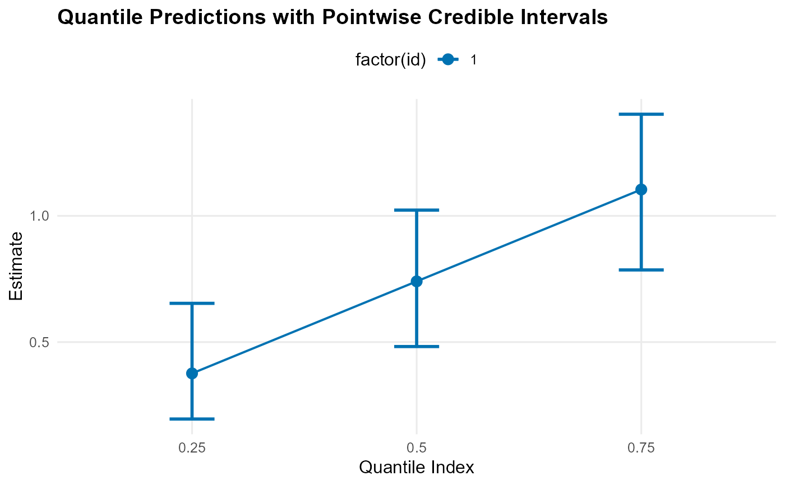
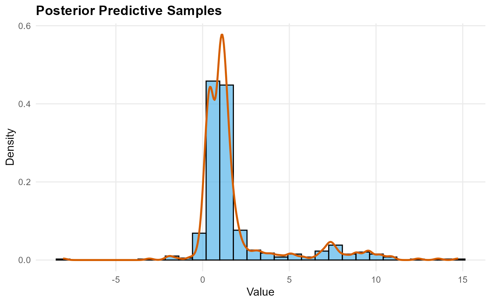
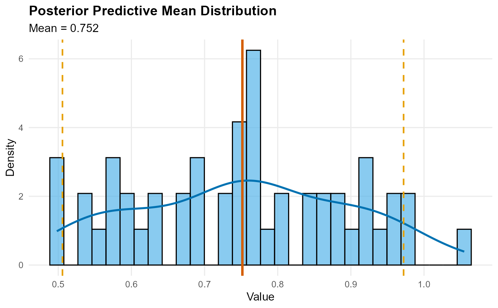

Plot prediction results
plot.mixgpd_predict.RdGenerates type-specific visualizations for prediction objects returned by
predict.mixgpd_fit(). Each prediction type produces a tailored plot:
quantile: Quantile indices vs estimates with credible intervalssample: Histogram of samples with density overlaymean: Histogram density with posterior mean vertical line and CI boundsdensity: Density values vs evaluation pointssurvival: Survival function (decreasing y values)
Usage
# S3 method for class 'mixgpd_predict'
plot(x, y = NULL, ...)Arguments
- x
A prediction object returned by
predict.mixgpd_fit().- y
Ignored; included for S3 compatibility.
- ...
Additional arguments passed to ggplot2 functions.
Details
The plotting method is tied to the predictive functional stored in the input object. Quantile and mean outputs display posterior point summaries and intervals, density and survival outputs show evaluated functions on the supplied grid, and posterior samples are visualized as empirical predictive draws.
In every case the plot reflects the quantity requested from
predict.mixgpd_fit() after integrating over the retained posterior draws. It
is therefore distinct from parameter-level summaries and from chain
diagnostics.
Examples
# \donttest{
y <- abs(stats::rnorm(25)) + 0.1
bundle <- build_nimble_bundle(y = y, backend = "sb", kernel = "normal",
GPD = TRUE, components = 3,
mcmc = list(niter = 100, nburnin = 50, thin = 1, nchains = 1))
fit <- run_mcmc_bundle_manual(bundle)
#> [mixgpd] Validating configuration
#> [mixgpd] Checking build/compile cache
#> [mixgpd] Building model and MCMC configuration
#> [mixgpd] Compiling NIMBLE model
#> [mixgpd] Initializing chains
#> [mixgpd] Running MCMC
#> [mixgpd] Finalizing WAIC and diagnostics
#> [mixgpd] Assembling fit object
# Quantile prediction with plot
pred_q <- predict(fit, type = "quantile", index = c(0.25, 0.5, 0.75))
#> [predict_mixgpd] Validating prediction inputs
#> [predict_mixgpd] Extracting posterior draws
#> [predict_mixgpd] Computing posterior summaries
#> [predict_mixgpd] Assembling prediction output
plot(pred_q)

# Sample prediction with plot
pred_s <- predict(fit, type = "sample", nsim = 500)
#> [predict_mixgpd] Validating prediction inputs
#> [predict_mixgpd] Extracting posterior draws
#> [predict_mixgpd] Computing posterior summaries
#> [predict_mixgpd] Assembling prediction output
plot(pred_s)

# Mean prediction with plot
pred_m <- predict(fit, type = "mean", nsim_mean = 300)
#> [predict_mixgpd] Validating prediction inputs
#> [predict_mixgpd] Extracting posterior draws
#> [predict_mixgpd] Computing posterior summaries
#> [predict_mixgpd] Assembling prediction output
plot(pred_m)

# }